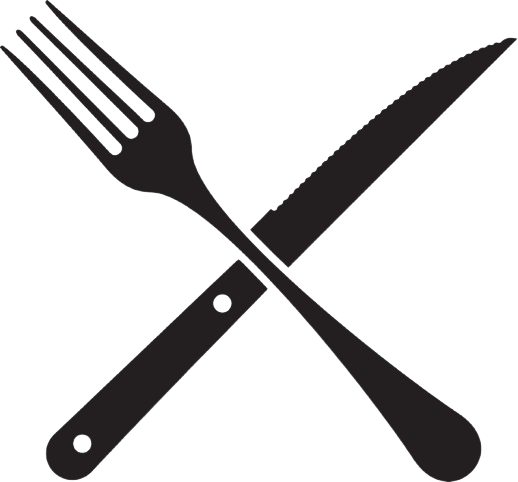

<ion-content [fullscreen]="true" class="custom-background">
  <!-- Progress Bar -->
  <ion-progress-bar type="indeterminate" color="dark"></ion-progress-bar>

  <!-- Centered Text Block -->
  <div class="center-text-container">
    <p class="center-text">แอปพลิเคชัน แสดงรายการสินค้า ร้านที่บ้านเพื่อน</p>
  </div>

  <div class="center-content">
    <!-- Image 1 (Clickable) -->
    <ion-button fill="clear" (click)="goToNextPage()" class="image-button">
      
    </ion-button>

    <!-- Button 1: รายการอาหาร -->
    <div class="button-container">
      <button class="custom-button" (click)="goToNextPage()">รายการอาหาร</button>
    </div>

    <!-- Image 2 (Clickable) -->
    <ion-button fill="clear" (click)="goToNextPage546()" class="image-button">
      
    </ion-button>

    <!-- Button 2: โปรโมชั่น -->
    <div class="button-container">
      <button class="custom-button" (click)="goToNextPage546()">โปรโมชั่น</button>
    </div>

    <!-- Image 3 (Clickable) -->
    <ion-button fill="clear" (click)="navigateToPage12()" class="image-button">
      
    </ion-button>

    <!-- Button: ช่องทางการติดต่อ -->
    <div class="button-container">
      <button class="custom-button" (click)="navigateToPage12()">ช่องทางการติดต่อ</button>
    </div>
  </div>

  <!-- Go Back Button -->
  <ion-button class="go-back-button" (click)="goBack()">ย้อนกลับ</ion-button>
</ion-content>
